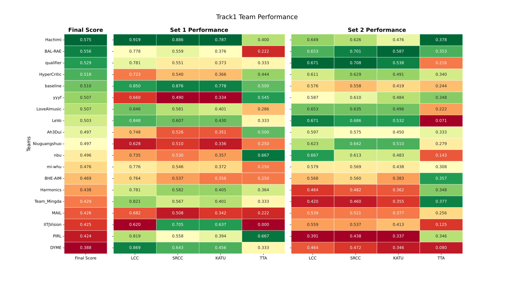
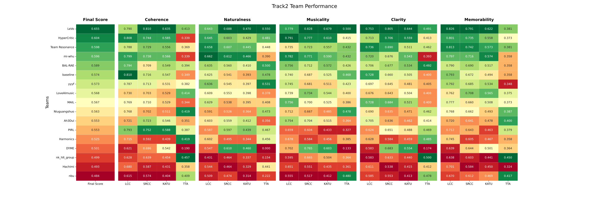

A competition aim at fostering the development of automatic models that can predict human aesthetic ratings of generated songs.
December 14, 2025: We have added a comprehensive "Detailed Analysis" section, including scoring methodologies and performance visualizations for both tracks.
December 4, 2025: We have updated the ranking results in the “Leaderboard” section below.
November 15, 2025: We have updated the formula and threshold for calculating Top-Tier Accuracy with detailed information available at the "Evaluation" section below.
November 10, 2025: We have sent the test set and submission Instructions to all successfully registered teams via email. These are also available in the respective track pages. Kindly note that the final submission deadline is 23:59 November 20, 2025 (AoE time).
With the rapid growth of generative music models, such as song generation (composing melodies, lyrics, harmonies, and vocals), we are entering an exciting new era of personalized music, virtual artists, and multimedia content creation. Despite these advancements, the evaluation of the aesthetic quality of generated music remains a challenge. Traditional metrics like pitch accuracy and signal clarity fall short of capturing the complex emotional and artistic dimensions of music that matter most to listeners. This challenge aims to create a benchmark for assessing the aesthetic quality of automatically generated songs. Participants will develop models that predict human ratings of songs based on musicality, emotional engagement, vocal expressiveness, and overall enjoyment.
Join us to push the boundaries of song aesthetics evaluation and contribute to the future of generative music!
The ICASSP 2026 Automatic Song Aesthetics Evaluation Challenge is designed to foster the development of models that can predict human aesthetic ratings of full-length generated songs. We focus on generating songs that align with human perceptions of musicality, emotional depth, and vocal expressiveness. Participants will be tasked with developing models that predict subjective ratings based on audio inputs.
Objective: Create models that can predict human ratings of aesthetic quality in songs, including dimensions like overall musicality, emotional engagement, and vocal expressiveness.
The competition consists of two tracks:
Track 1: Overall Musicality Score Prediction Participants must predict a single holistic aesthetic score for each song, representing an overall musical impression of the song’s artistic quality.
Track 2: Fine-Grained Aesthetic Dimension Prediction Participants to predict five specific aesthetic dimensions for each song.
Each track will use correlation-based metrics as follows:
We will measure both system-level and utterance-level.
Quantification Method: Top-Tier Accuracy is uniformly measured using the F1 score.
F1 Score Formula: F1 = 2 × (Precision × Recall) / (Precision + Recall)
Brief Definition: Precision = True Positives / (True Positives + False Positives); Recall = True Positives / (True Positives + False Negatives)
Top-Tier Song Thresholds:
Final results can be submitted using Google form: ICASSP2026 ASAE Challenge Final Submission Form
Each participating team must submit one SCP file per track.
Track 1 submission format:
Each line should contain: utt score
Track 2 submission format:
Each line should contain: utt score1 score2 score3 score4 score5
Please ensure that the utt IDs exactly match those in the provided test sets.
All predicted scores are in a valid numeric format.
Files are named as track1_set1_pred.scp, track1_set2_pred.scp and track2_pred.scp, respectively.
Each team must submit a two-page system description summarizing their method, model architecture, training strategy, and any relevant implementation details.(excluding references)
The format should follow the ICASSP official paper template (available on the ICASSP 2026 website)
Submission of both the prediction files and the system description is required. Missing either will lead to cancellation of the challenge ranking.
The competition provides a baseline system built upon SongEval. The baseline toolkit leverages a trained aesthetic evaluation model on SongEval, enabling automatic scoring of generated songs across five perceptual dimensions, closely aligned with professional musicians’ judgments.
The baseline test validation IDs are available in the val_ids.txt file.
This baseline serves as a reproducible and extensible starting point, helping participants better benchmark their systems and ensuring fair comparison across different approaches.
| Rank | Team Name | Score |
|---|---|---|
| 1🏆 | Hachimi | 0.575 |
| 2🏆 | BAL-RAE | 0.556 |
| 3🏆 | qualifier | 0.529 |
| 4 | HyperCritic | 0.518 |
| 5 | Baseline | 0.510 |
| 6 | yyyf | 0.507 |
| 6 | LoveAImusic | 0.507 |
| 8 | LeVo | 0.503 |
| 9 | Ah3Dui | 0.497 |
| 9 | Niuguangshuo | 0.497 |
| 11 | nbu | 0.496 |
| 12 | mi-whu | 0.476 |
| 13 | BHE-AIM | 0.469 |
| 14 | Harmonics | 0.438 |
| 15 | Team_Mingda | 0.429 |
| 16 | 0.426 | |
| 17 | IITJVision | 0.425 |
| 18 | PIRL | 0.424 |
| 19 | DYME | 0.388 |
| Rank | Team Name | Score |
|---|---|---|
| 1🏆 | LeVo | 0.655 |
| 2🏆 | HyperCritic | 0.604 |
| 3 | Team Resonance | 0.598 |
| 4 | mi-whu | 0.596 |
| 5 | BAL-RAE | 0.589 |
| 6 | Baseline | 0.574 |
| 7 | yyyf | 0.573 |
| 8 | LoveAImusic | 0.568 |
| 9 | 0.567 | |
| 10 | Niuguangshuo | 0.563 |
| 11 | Ah3Dui | 0.553 |
| 11 | PIRL | 0.553 |
| 13 | Harmonics | 0.525 |
| 14 | DYME | 0.501 |
| 15 | nk_hlt_group | 0.499 |
| 16 | Hachimi | 0.493 |
| 17 | nbu | 0.484 |
Note: 🏆 indicates teams invited to submit ICASSP 2-page papers.
The final score for Track 1 is derived from two test sets (Set1 and Set2). Each set is evaluated at both the Utterance (UTT) and System (SYS) levels.
For each dataset (Set 1 and Set 2), we first calculate the composite metrics for each team. Since the TTA metric exists only at the UTT level, it is used directly. For the other metrics (LCC, SRCC, KATU), we average the scores from the SYS and UTT levels:
The score for a specific set is the average of these four metrics:
The final score for Track 1 is a weighted average of the scores from Set 1(Easy) and Set 2(Hard), with a ratio of 2:8:
$$\text{Final Score (Track 1)} = 0.2 \times Score_{set1} + 0.8 \times Score_{set2}$$

Track 2 evaluation involves five dimensions: Coherence, Naturalness, Memorability, Clarity, and Musicality. The calculation proceeds in three steps:
For each dimension (Coherence, Naturalness, Memorability, Clarity, Musicality), we first calculate the average of LCC, SRCC, and KATU at both UTT and SYS levels:
TTA is used directly from the UTT level, as it is only available there.
For each dimension, we then calculate the average of LCC, SRCC, KATU, and TTA:
Finally, we calculate the overall Track 2 score by averaging the final scores of all five dimensions:
$$\text{Final Score (Track 2)} = \frac{\sum_{d=1}^{5} \text{Final Score}_{dim}}{5}$$

Note: The LCC, SRCC, and KATU scores shown in the above figures are averaged from both utterance-level (UTT) and system-level (SYS) evaluations. For more detailed results, please refer to the results folder.
The challenge is organized by a distinguished team of researchers:
For any inquiries, please contact: Email: yaojx@mail.nwpu.edu.cn
Welcome to join our WeChat group